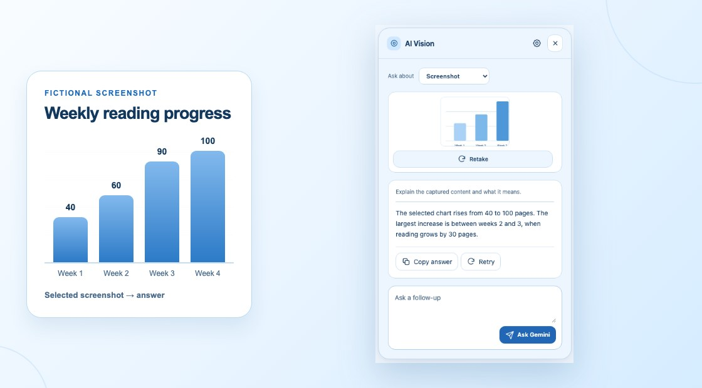

What it does
Select a screenshot, explain the detail that matters, and ask a follow-up. You can also extract text, summarize a page, or compare tabs.
See a screenshot example →AI SCREENSHOT ASSISTANT FOR CHROME · V2.8 PREVIEW
Explain screenshots, copy text from images, and ask follow-up questions in Chrome.
Free extension · Your Gemini API key required · Get your Gemini API key

PRODUCT FACTS
AI Vision is a Gemini Chrome extension for a quick, useful answer about something on screen.
Best for desktop Chrome screenshots, image-to-text, webpage summaries, and tab comparisons on supported webpages. Chrome internal pages and the Web Store are restricted.
Select a screenshot, explain the detail that matters, and ask a follow-up. You can also extract text, summarize a page, or compare tabs.
See a screenshot example →Use it for charts, error messages, image text, articles, product research, and other visual questions while browsing.
See text-extraction examples →Use the free extension in desktop Google Chrome on supported webpages. Chrome internal pages and the Web Store cannot be analyzed.
Read the webpage guide →Bring a Gemini API key from Google AI Studio. Google sets model access, quotas, and any billing separately from installation.
Get a Gemini API key →Install AI Vision from the official Chrome Web Store. The extension is free; Gemini usage follows Google’s project limits.
Open the official listing ↗Your key and preferences stay in Chrome storage. Requests go directly to Google’s Gemini API; review the privacy notice and public GitHub repository.
Read the privacy notice →View the source ↗Choose a sample to see how the screenshot assistant works. Each answer is fictional; the demo never sends an API request.
Fictional screenshot · Reading club
One-tap explanation
“Explain this screenshot.”
Illustrative answer
Reading increased most from week 2 to week 3: from 60 to 90 pages, a gain of 30. Week 4 has the highest total, but the increase is smaller at 10 pages.
Follow up: “What would I need to know before calling this a trend?”
Learn to explain a screenshot →Fictional article · Community library
The library is testing a quiet study hour from 4–5 pm on Tuesdays and Thursdays for six weeks. The ground floor stays open for conversation. Staff will collect visitor feedback before deciding whether to continue.
You ask
“What’s changing, and what’s still undecided?”
Illustrative answer
Quiet study hours are being trialed twice a week for six weeks. The ground floor remains a social space. Whether the quiet hours become permanent depends on visitor feedback.
Learn to summarize a webpage →Fictional product tabs
Daylight 18: 18 L capacity, 600 g, padded laptop sleeve, no rain cover.
Cloudpack 22: 22 L capacity, 850 g, rain cover included, laptop sleeve not specified.
You ask
“Which bag fits a light laptop commute?”
Illustrative answer
Daylight 18 is 250 g lighter and explicitly includes a laptop sleeve. Cloudpack 22 adds 4 L of space and rain protection, but you’d need to verify laptop storage before choosing it.
Learn to compare Chrome tabs →Fictional content and illustrative responses. No API call, key, or page access is used by this demo.
Install AI Vision, save your Gemini key, and start with the screenshot in front of you.
Get your Gemini API key →Install from the Chrome Web Store.
In Google AI Studio, create a key, paste it into Settings, and choose Save & check key.
Open Google AI Studio ↗Choose Screenshot, drag around the detail that matters, and press Explain screenshot. Google controls Gemini limits and pricing.
Use a screenshot for a visual detail, a page for its key points, or tabs for a side-by-side comparison.
Understand charts, diagrams, errors, and text inside images.
Screenshot guide →Copy text guide →Turn a readable article into a summary you can check.
Webpage guide →Bring related sources together and keep their differences visible.
Tab comparison guide →Your key stays in Chrome. Requests go directly to Google. Optional browser tasks keep their approval and Stop controls.
Read the privacy notice →Yes. AI Vision uses your own key from Google AI Studio. Save it in the extension’s Settings. The website never asks you to paste a key.
The extension is free to install. Google controls Gemini API pricing, model availability, and usage limits. Check the limits and billing for your project in Google AI Studio.
Your question and the screenshot or page context needed for the request go directly to the Gemini API. Your key stays in Chrome’s local extension storage and is sent to Google to authenticate requests. There is no developer proxy or analytics.
AI Vision works on supported webpages. Chrome internal pages, the Chrome Web Store, and other restricted pages cannot be analyzed. Compare tabs needs optional permission and reads up to 20 supported tabs in the current window.
Install AI Vision, save your Gemini key, and get a clear answer with a follow-up ready.